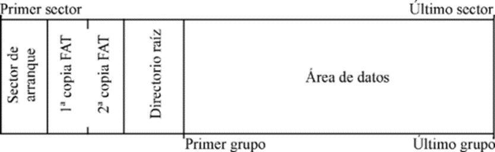
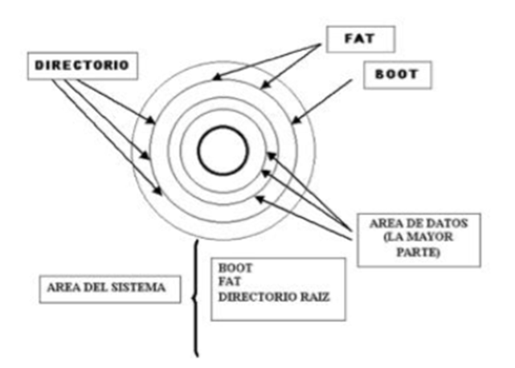
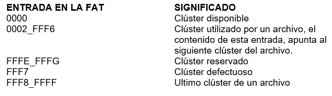
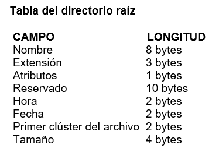
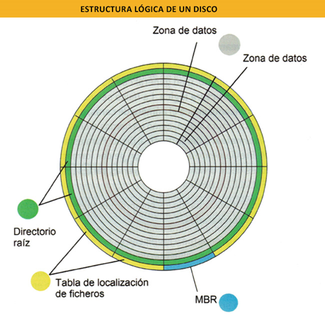

Formato lógico (Formato de Alto Nivel)
El formateo de una unidad implica la eliminación de los datos, debido a que se cambia la asignación de archivos a clúster (conjunto de sectores contiguos, pero que el sistema distribuye a su antojo), con lo que se pierde la vieja asignación que permitía acceder a los archivos.
Cada sistema operativo tiene unos sistemas de archivos más habituales:
- Windows: FAT, FAT16, FAT32, NTFS, EFS, ExFAT.
- Linux: ext2, ext3, ext4, JFS, ReiserFS, Reiser4, XFS.
- Solaris: UFS, ZFS.
- Mac OS: HFS, HFS+.
- IBM: JFS, GPFS.
Discos Ópticos:
UDF: Antes de poder usar un disco para guardar información, éste deberá ser formateado. Los discos movibles (disquetes, CD, USB, Unidad Zip, etc.) que se compran normalmente ya se encuentran formateados, pero puede encontrar algunos no formateados de vez en cuando.
Habitualmente, un formateo completo realiza las siguientes operaciones:
Borra toda la información anterior (incluyendo obviamente virus porque forma parte de los programas), establece un sistema de archivos para grabar disponiendo qué y dónde se ubicará en el disco y verifica el disco sobre posibles errores físicos o magnéticos que pueda tener .
Nota: Hay que destacar que, en el formateo de alto nivel, el borrado de archivos no de manera definitiva, ya que, mediante un proceso especial, se podría recuperar la información, por eso es importante tener en cuenta que en caso de querer eliminar a toda la información y entregar un disco totalmente vacío, es importante realizar un formateo de bajo nivel y de esta manera asegurarme de no dejar posibilidad de recuperar la información vieja. Lo recomendable, para evitar que datos sensibles lleguen a manos ajenas, es utilizar software especializado, hay aplicaciones que hacen formateos de bajo nivel o low level format.
La mejor de todas es HDD LLF Low Level Format.
El formato lógico, de alto nivel o también llamado sistema de archivos, puede ser realizado habitualmente por los usuarios, aunque muchos medios vienen ya formateados de fábrica.
El formato lógico implanta un sistema de archivos que asigna sectores a archivos. En los discos duros, para que puedan convivir distintos sistemas de archivos, antes de realizar un formato lógico hay que dividir el disco en particiones y más tarde, cada partición se formatea por separado.
Consiste en la creación de un conjunto de índices que señala en todo momento al estado del disco y permite direccionar la información para ello el disco se divide en dos zonas.
La estructura física determina la capacidad del disco y viene impuesta por el fabricante.
Sin embargo, el DOS trabaja con clúster y estructuras lógicas, y la estructura lógica se crea en el disco duro durante el proceso de formateo.
Sigue inmediatamente del formato físico y consiste en dividir la capacidad de almacenamiento del disco en porciones que puedan ser manejadas por el SO (así como el BIOS), tanto el formato lógico como el físico son realizados por el comando format del SO.

Se divide el disco en cuatro en cuatro zonas:
A. Área del sistema:
Sector de arranque 
El sector de arranque (boot sector) se localiza en el primer sector de todo disco y ocupa 512 bytes. Este sector de arranque se utiliza principalmente para dos tareas:
a) contiene un pequeño programa que se ejecuta al encender la computadora y que permite cargar el DOS en memoria durante la inicialización del sistema. Cada vez que se inicializa la computadora busca el sector de arranque de la unidad C y se ejecuta este pequeño programa, que puede hacer dos cosas: o bien carga el DOS en memoria o bien muestra por pantalla el mensaje:
No es disco de sistema
Pulse cualquier tecla para continuar.
b) por otra parte, el sector de arranque almacena una tabla con información sobre la estructura física y lógica del disco: por ejemplo, numero de caras, numero de pistas, numero de sectores por pista, numero de bytes por sector, numero de sectores por clúster, numero de FAT, nombre y versión del sistema operativo, etc.
- Mapa del Sector de Arranque
Reservado 3 bytes
Nom_fab, versión 8 bytes.
Sectores por clúster 2 bytes
Bytes por sector 2 bytes
Sector reservado 2 bytes
# de copias de la fat 1 bytes
# número de entradas al directorio raíz 2 bytes
byte del formato del disco
# de sectores por fat 2 bytes
sector por pista 2 bytes
# de cabezas 2 bytes
# de sectores ocultos 2 bytes
rutina de arranque (root)
B. FAT
Registra el estado general de todos los clústeres, así como el direccionamiento de los archivos según la cadena clúster que ocupe, es un método de encadenamiento lógico para seguir la huella a los archivos.
La función de un disco es almacenar información de la manera más eficiente posible. Si el DOS almacenara los archivos en sectores contiguos, al ir borrando archivos, es posible que los sectores libres contiguos que van quedando no sean suficientes para almacenar otro archivo que ocupe más sectores contiguos desperdiciándose así espacio en el disco. Por ello el almacenamiento de los archivos en sectores contiguos no es el mejor método. Por ello el DOS utiliza los clúster o unidades de asignación y la FAT. Un clúster es un conjunto de uno o más sectores contiguos.
Cuando el DOS copia un archivo en un disco, no lo copia en el sector x de la pista x de la cara x, sino que lo copia en el clúster x. (El sector es la mínima unidad de información para el disco; pero el clúster es la unidad mínima de información para el DOS).
El número de sectores que ocupa cada clúster ha de ser potencia de 2 (1, 2, 4, 8, etc.) y su valor exacto depende de la capacidad del disco.
Los clústeres solucionan el problema del almacenamiento de los archivos en el disco, pues, aunque los clústeres se componen de sectores contiguos, los archivos se almacenan en clúster que no necesitan ser contiguos.
Ahora bien, ¿cómo sabe el DOS en que clúster continuo un determinado archivo? Mediante la FAT (File Allocation Table).
La FAT es una tabla. Cada elemento se corresponde con cada uno de los clústeres del disco, es decir, cada clúster del disco tiene asociado un elemento de la tabla que coincide con su posición. Es decir, el elemento situado en la posición 40 de la FAT controla el clúster 40 del disco (que a su vez corresponde a unos determinados sectores del disco).
Cada elemento de la tabla puede tener uno de los siguientes valores:
- Una marca especial para indicar que es un clúster libre, es decir no almacena ningún dato.
- Una marca especial para indicar que es el último clúster de un archivo, es decir que los sectores de ese clúster almacenan la parte final del archivo.
- Una marca especial de clúster defectuoso. En el formateo el DOS verifica cada sector a fin de detectar si tiene defectos y si hubiera sectores dañados los marca a fin de no almacenar datos en ellos.
Como lo demuestra la siguiente tabla.

Cualquier otro valor numérico se interpreta como el clúster siguiente. Es decir, si el elemento 135 de la FAT tiene el valor 164 esto quiere decir que detrás de los sectores del clúster 135, el contenido del archivo continúa en los sectores del clúster 164.
La FAT sirve para mantener la pista del almacenamiento de los archivos en clúster no secuenciales. Si se corrompe la FAT posiblemente se perderán gran parte de los datos, ya que no se sabrá donde continúa un archivo y donde termina. La FAT es tan importante que todos los discos tienen dos copias de la FAT.
El tamaño del clúster depende del tamaño del disco, según la siguiente tabla:
Tamaño unidad FAT16 -----> Tamaño clúster
Menos de 128MB ---------------> 2KB
128MB a 255MB ----------------> 4KB
256MB a 511MB ----------------> 8KB
512MB a 1GB --------------------> 16KB
1GB a 2GB -------------------------> 32KB
Si se tiene un disco que utiliza clúster de 16KB y crea un archivo con tan solo 4 letras "HOLA", su tamaño real es de 4 bytes, pero en el disco ocupara 1 clúster (16KB), lo que supone una pérdida de espacio de más de 15KB.
No podemos crear unidades superiores a 2GB ¿Por qué? Si cada elemento de la FAT viene expresado en 16 bits se podrá hacer referencia hasta el clúster 65536 (2 elevado a 16). Si cada clúster de dicha unidad es de 32KB la unidad tendrá una capacidad de 2097152KB (65536 clúster * 32KB) o 2047MB o 2GB.
C. El directorio raíz.
El directorio raíz es la tercera zona creada al formatear un disco. Un directorio está formado por elementos de 32 bytes llamados entradas, donde se recoge la información esencial de cada archivo y en los cuales están todos por ese número de entradas.
Hay una entrada por cada archivo almacenado en el directorio, una entrada por cada subdirectorio y solo en el directorio raíz una entrada por la etiqueta de volumen del disco. Así mismo, todo directorio distinto del directorio raíz, tiene siempre como mínimo 2 elementos: el elemento. (Punto) que identifica al directorio activo, y el elemento... (Dos puntos) que identifica al directorio padre del directorio activo.
Cada entrada almacena la información: nombre, extensión, byte de atributos (solo lectura, oculto, del sistema, la entrada es una etiqueta, la entrada es un directorio, bit de archivo o de depósito), hora, fecha, clúster de comienzo, tamaño en bytes.
como lo muestra la siguiente tabla.
Los subdirectorios tienen el mismo tipo de entradas que el directorio raíz. Pero el tamaño del directorio raíz es fijo (32 sectores, lo que equivale a 512 entradas de directorio).

D. Zona de datos
Es el resto del espacio del disco que se reserva para almacenar los archivos del usuario. Si el disco es un disco del sistema operativo en esta área se almacenarán además los programas necesarios para poder trabajar con la computadora.
Es la parte donde van almacenados los programas y archivos del usuario y es el que sigue a continuación de área del sistema prolongándose hasta el final del disco, hacia fuera.
No tiene ningún formato especial y está dividido lógicamente en clúster que se gestionan a través de la FAT.
Cuando se formatea un disco y se crea la estructura lógica los sectores del Área de Datos se dividen en clúster que se numeran secuencialmente.

La capacidad total de un disco es el producto resultante del número de cabezas, pistas o cilindros sectores por pistas y bytes por sector.
Capacidad total = cabezas * cilindros * sector * (bytes/sector)